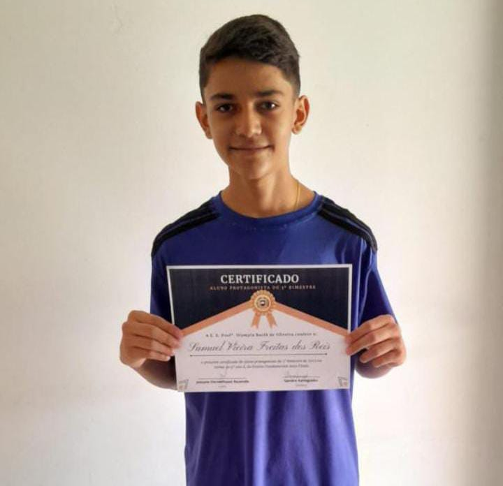

Olá, tudo bem? Somos dois alunos da Etec Polivalente de Americana mas estudamos na Fatec no curso de Desenvolvimento de Sistemas.
| Samuel Vieira | Sobre Mim |
|---|---|
|  | Sou o Samuel Vieira, tenho 15 anos e gosto de jogar futebol, e para minha vida sempre busco o melhor tanto em conhecimentos,fisicamente e psicologicamente, com o objetivo de sempre ser o melhor. |
| Octávio Augusto | Sobre Mim |
|
|
Sou Octavio Augusto, tenho 15 anos e gosto de ir pra academia e jogar bola, sempre buscando a minha melhor versão, tanto fisicamente quanto mentalmente |